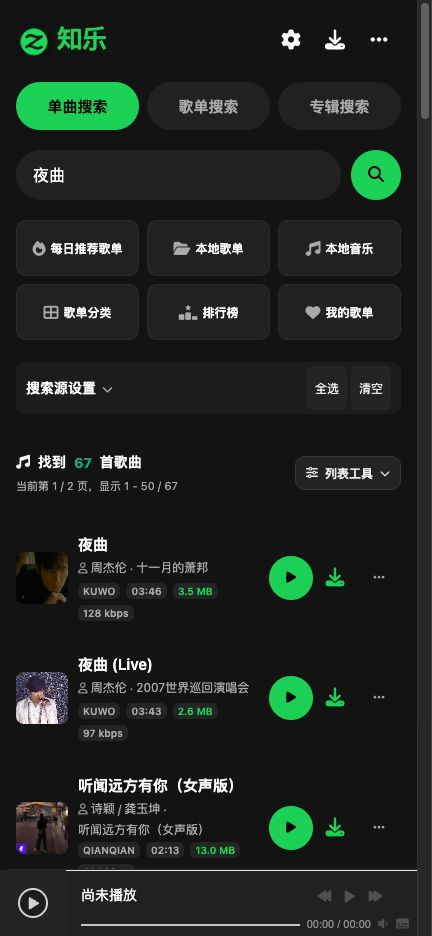

找到想听的歌
按歌名、歌手或专辑搜索，
在多个音乐来源间自由选择。
OPEN SOURCE / ANDROID
搜索、聆听、收藏。
把喜欢的声音，留在自己的音乐角落。
v0.1.0 · Android 7.0+ · ARM64 适合大多数安卓手机

按歌名、歌手或专辑搜索，
在多个音乐来源间自由选择。
在线试听，切换音源。
从搜索结果开始，发现喜欢的旋律。
收藏喜欢的歌曲，或下载
你有权保存的音乐，随时回味。
GET STARTED
首个品牌预览版 · 持续打磨中
用手机浏览器打开此页，下载 Android 版 APK。打开文件，按系统提示允许当前浏览器安装此应用。安装完成后打开 知乐 即可，无需连接你的电脑。
需要 Android 7.0 或更新版本，并保持系统 Android WebView 更新。若提示架构不兼容，请尝试上面的通用版。此版本已完成构建与网页检查，尚未完成安卓真机验证。
可用性取决于音乐来源、网络与平台权限，部分来源需要你自己的登录信息。可以尝试换源；本应用不保证每首歌均可下载。
知乐 基于 go-music-dl 二次开发，以 AGPL-3.0 发布。你可以查看、修改和再分发代码，并按协议提供对应源码。查看修改与第三方声明。